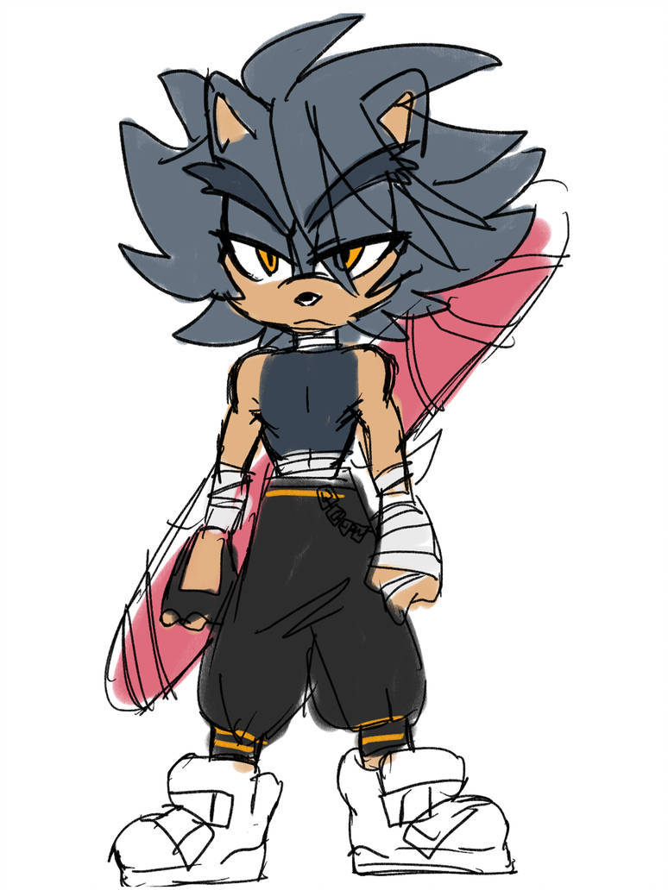

Elegy
he/him, they/them | tasmanian devil | mercenary

art and design by kuupan on deviantart! icon by emeraldhavoc on twitter.
A rival mercenary to Elegy; Blade is after the Hope Shards; a collection of fragments of a gem that when brought together, grant wishes to the pure of heart. Grumpy and a lone wolf type, Blade generally keeps to himself, only interacting with those who give him jobs.